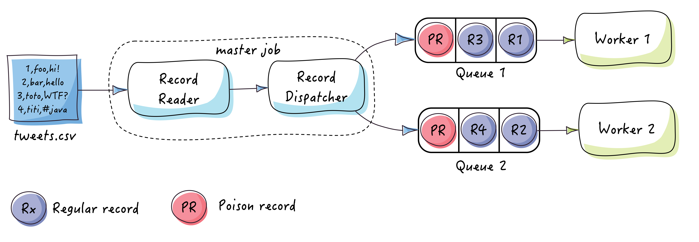
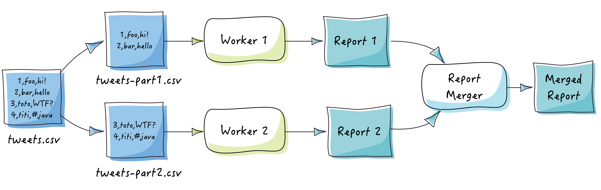
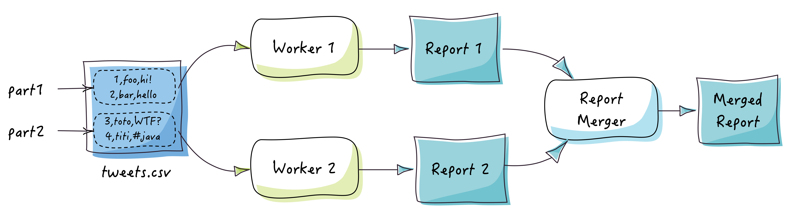

Parallel jobs
1. Introduction
Easy Batch jobs implement the java.util.concurrent.Callable interface.
This turns them into units of work that can be submitted to a java.util.concurrent.ExecutorService.
Using the java.util.concurrent.ExecutorService with a pool of threads, you can run multiple Easy Batch jobs in parallel.
There are at least 3 ways to process data in parallel:
- Distributing input records to multiple jobs
- Physical partitioning of the data source into multiple physical parts which will be processed by separate jobs
- Logical partitioning of the data source into multiple logical parts which will be processed by separate jobs
In this tutorial, you will see an example of implementing each of these techniques using Easy Batch.
You will reuse the same application developed in the Hello world tutorial but with a huge tweets data source:
tweets.csv
id,user,message
1,foo,easy batch rocks! #EasyBatch
2,bar,@foo I do confirm :-)
...
10000000,baz,@foo @bar what are you talking about? Am I in trouble?
2. What you’ll need
- JDK 1.7+
- Maven
- Git (Optional)
- Your favorite IDE (Optional)
3. Dispatching records
The RecordDispatcher API is used to distribute work to multiple workers:

There are 4 implementations of the RecordDispatcher API. Please refer to the
components reference (section "dispatchers") for all details about available record dispatchers.
In this tutorial, you will learn how to use the RoundRobinRecordDispatcher to distribute tweets to 2 queues.
Heads up!
Poison records serve as End-Of-Stream messages, they are used to stop the job (gracefully).
The PoisonRecord utility class is used to stop the job when all data has been read.
Poison records have no business value, you should filter them using the PoisonRecordFilter.
We will create a "master" job that will read data from the input file and use a RoundRobinRecordDispatcher
to distribute records to "worker" jobs. Each worker job will read data from a queue which holds the work that is assigned to it:
public class ParallelTutorialWithRecordDispatching {
private static final int THREAD_POOL_SIZE = 3;
public static void main(String[] args) throws Exception {
// Input file tweets.csv
File tweets = new File("tweets.csv");
// Create queues
BlockingQueue<Record> queue1 = new LinkedBlockingQueue<>();
BlockingQueue<Record> queue2 = new LinkedBlockingQueue<>();
// Create a round robin record dispatcher
RoundRobinRecordDispatcher<Record> roundRobinRecordDispatcher
= new RoundRobinRecordDispatcher<>(Arrays.asList(queue1, queue2));
// Build a master job that will read records from the data source
// and dispatch them to worker jobs
Job masterJob = JobBuilder.aNewJob()
.named("master-job")
.reader(new FlatFileRecordReader(tweets))
.filter(new HeaderRecordFilter())
.mapper(new DelimitedRecordMapper(Tweet.class, "id", "user", "message"))
.dispatcher(roundRobinRecordDispatcher)
.jobListener(new PoisonRecordBroadcaster<>(Arrays.asList(queue1, queue2)))
.build();
// Build worker jobs
Job workerJob1 = buildWorkerJob(queue1, "worker-job1");
Job workerJob2 = buildWorkerJob(queue2, "worker-job2");
// Create a thread pool to call master and worker jobs in parallel
ExecutorService executorService = Executors.newFixedThreadPool(THREAD_POOL_SIZE);
// Submit workers to executor service
executorService.invokeAll(Arrays.asList(masterJob, workerJob1, workerJob2));
// Shutdown executor service
executorService.shutdown();
}
public static Job buildWorkerJob(BlockingQueue<Record> queue, String jobName) {
return JobBuilder.aNewJob()
.named(jobName)
.reader(new BlockingQueueRecordReader(queue))
.filter(new PoisonRecordFilter())
.processor(new TweetProcessor())
.build();
}
}The record dispatcher dispatches records to a java.util.concurrent.BlockingQueue.
We can use the BlockingQueueRecordReader to pull records from this queue. When the master job finishes reading the data source, it sends a PoisonRecord
using the PoisonRecordBroadcaster to stop worker jobs.
4. Splitting the data source
It is a common technique to split the data source into multiple slices as follow:

Easy Batch does not provide a feature to partition input data. If you decided to split your data source into multiples parts,
you can still use Easy Batch to process them in parallel using a java.util.concurrent.ExecutorService.
Here is a sample of how to use multiple jobs to process multiple data source parts in parallel:
public class ParallelTutorialWithDataSplitting {
private static final int THREAD_POOL_SIZE = 2;
public static void main(String[] args) throws Exception {
// Input file tweets-part1.csv
File tweetsPart1 = new File(args[0]);
// Input file tweets-part2.csv
File tweetsPart2 = new File(args[1]);
// Build worker jobs
Job job1 = buildJob(tweetsPart1, "worker-job1");
Job job2 = buildJob(tweetsPart2, "worker-job2");
//create a 2 threads pool to call worker jobs in parallel
ExecutorService executorService = Executors.newFixedThreadPool(THREAD_POOL_SIZE);
List<Future<Report>> partialReports =
executorService.invokeAll(Arrays.asList(job1, job2));
//merge partial reports into a global one
JobReport report1 = partialReports.get(0).get();
JobReport report2 = partialReports.get(1).get();
JobReportMerger reportMerger = new DefaultJobReportMerger();
JobReport finalReport = reportMerger.mergerReports(report1, report2);
System.out.println(finalReport);
executorService.shutdown();
}
private static Job buildJob(File file, String jobName) throws FileNotFoundException {
return JobBuilder.aNewJob()
.named(jobName)
.reader(new FlatFileRecordReader(file))
.mapper(new DelimitedRecordMapper(Tweet.class, "id", "user", "message"))
.processor(new TweetProcessor())
.build();
}
}In this example, we have distributed the work across multiple jobs, so we will get partial reports at the end of execution of each worker job.
How do we get a global report for all the work? This is where the ReportMerger comes to play,
that is, to merge partial reports into a global one.
Heads up!
In this example, you have used multiple threads within the same JVM to process data in parallel. You could also launch separate JVMs for each part.
5. Filtering the data source
Sometimes it is just impossible to split the data source into multiple physical parts. The third technique is to use a single data source but to instruct worker jobs to process separate parts and filter the rest of the data source.
Let's see an example:

- The first job instance will read data from
tweets.csvfile, process records 1-2 and filter records 3-4. - The second job instance will also read data from
tweets.csvfile, process records 3-4 and filter records 1-2.
The following listing shows the code to achieve this configuration:
public class ParallelTutorialWithDataFiltering {
private static final int THREAD_POOL_SIZE = 2;
public static void main(String[] args) throws Exception {
// Input file tweets.csv
File tweets = new File(args[0]);
// worker job 1: process data from tweets.csv, filter records 3-4
Job job1 = buildJob(tweets, new RecordNumberGreaterThanFilter(2), "worker-job1");
// worker job 2: process data from tweets.csv, filter records 1-2
Job job2 = buildJob(tweets, new RecordNumberLowerThanFilter(3), "worker-job2");
//create a 2 threads pool to call worker jobs in parallel
ExecutorService executorService = Executors.newFixedThreadPool(THREAD_POOL_SIZE);
List<Future<Report>> partialReports =
executorService.invokeAll(Arrays.asList(job1, job2));
//merge partial reports into a global one
JobReport report1 = partialReports.get(0).get();
JobReport report2 = partialReports.get(1).get();
JobReportMerger reportMerger = new DefaultJobReportMerger();
JobReport finalReport = reportMerger.mergerReports(report1, report2);
System.out.println(finalReport);
executorService.shutdown();
}
private static Job buildJob(File file, RecordFilter recordFilter, String jobName)
throws FileNotFoundException {
return new JobBuilder()
.named(jobName)
.reader(new FlatFileRecordReader(file))
.filter(recordFilter)
.mapper(new DelimitedRecordMapper(Tweet.class, "id", "user", "message"))
.processor(new TweetProcessor())
.build();
}
}6. Running the tutorial
6.1 From the command line
To run the tutorials, proceed as follow:
$>git clone https://github.com/EasyBatch/easybatch-tutorials.git
$>cd easybatch-tutorials
$>mvn install
$> # Launch the record dispatching tutorial
$>mvn exec:java -PrunParallelTutorialWithRecordDispatching
$> # Launch the data source splitting tutorial
$>mvn exec:java -PrunParallelTutorialWithDataSplitting
$> # Launch the data source filtering tutorial
$>mvn exec:java -PrunParallelTutorialWithDataFiltering
6.2 From your IDE
First, you need to checkout the source code of the tutorial available here:
$>git clone https://github.com/EasyBatch/easybatch-tutorials.gitIf you do not have git installed, you can download a zip file containing the project's source code from GitHub here.
Then, import the easybatch-tutorials module in you favorite IDE and resolve maven dependencies.
Finally, run the one of the following classes without any argument:
org.easybatch.tutorials.advanced.parallel.ParallelTutorialWithDataFilteringorg.easybatch.tutorials.advanced.parallel.ParallelTutorialWithDataSplittingorg.easybatch.tutorials.advanced.parallel.ParallelTutorialWithRecordDispatching
7. Summary
In this tutorial, you have seen at least 3 ways of how to process data in parallel using multiple worker jobs in order to speed up the overall processing time.
The following table summarizes the advantages and drawbacks for each approach:
| Approach | Advantages | Drawbacks |
|---|---|---|
| Dispatching records (no partitioning) | Best way to distribute work across multiple workers. | Need to setup an additional record reader and queues. |
| Splitting the data source (physical partitioning) |
Each job reads only its own part and not the entire data source | Need to split the data source into multiple parts |
| Filtering the data source (logical partitioning) |
No need to split the input data source into multiple parts | Each job will read the entire data source |
Using a record dispatcher should be your first choice when dealing with data processing in parallel because it is more efficient than other techniques and provides the most natural way of distributing the work across multiple jobs.